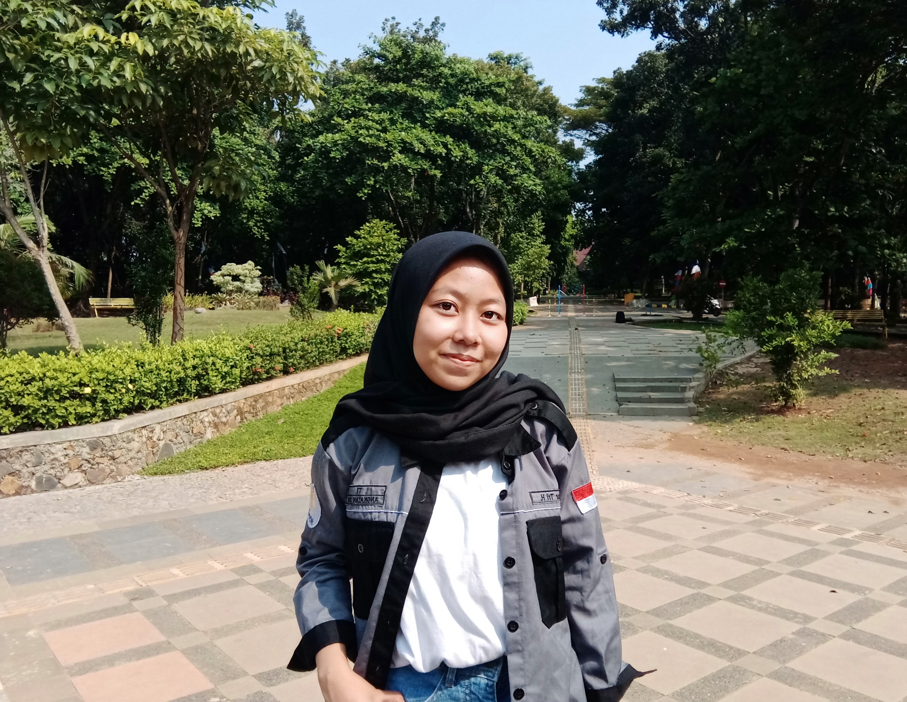

About
Eksperimen S-Box berbasis affine matrix: generate, analisis 10 metrik, dan uji enkripsi/dekripsi teks serta gambar dalam satu alur.

Mahasiswi Teknik Informatika yang ingin mempermudah eksplorasi S-Box dan evaluasi cepat tanpa setup rumit.